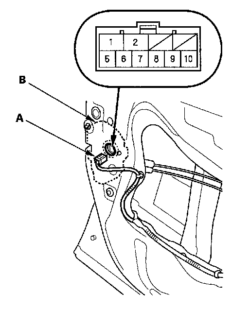
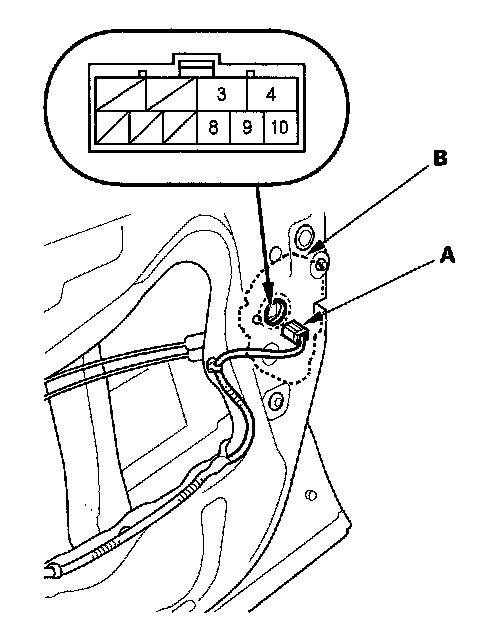

Door Lock Knob Switch Test
Door Lock Knob Switch TestDriver's Door
1. Remove the driver's door panel.

2. Disconnect the 10P connector (A) from the actuator (B).
3. Check for continuity between the terminals.
- There should be continuity between the No. 6 and No. 5 terminals when the door lock knob switch is in the LOCK position and no continuity when the switch is in the UNLOCK position.
- There should be continuity between the No. 7 and No. 5 terminals when the door lock knob switch is in the UNLOCK position and no continuity when the switch is in the LOCK position.
4. If the continuity is not as specified, replace the door lock actuator.
Passenger Doors
1. Remove the passenger's door panel.

2. Disconnect the 10P connector (A) from the actuator (B).
NOTE: The illustration shows the front passenger's door.
3. Check for continuity between the terminals. There should be continuity between the No. 8 [No. 7] and No. 10 [No. 5] terminals when the door lock knob switch in the UNLOCK position and no continuity when the switch is in the LOCK position.
[ ] : Left rear door
4. If the continuity is not specified, replace the door lock actuator.